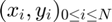
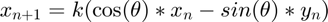
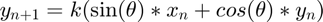
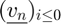
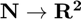
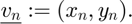
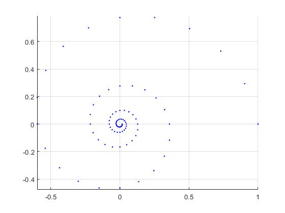

Exercice 4, Suite et récurrence (3 pts)
Contents
Test de la fonction spir
format default N = 80; k = 0.95; theta = pi * (1 ./ 10); v0 = [1 0]'; % v0=[x0,y0] spir(N, k, theta, v0(1), v0(2)) %f = @(vn) k * (vn(1) * [cos(theta), sin(theta)]') + (vn(2) * [-sin(theta), cos(theta)]');
Dessine les points  définis tels que
 et

Soit  la suite de  telle que 
function spir(N, k, th, x0, y0) % N - défini ci-dessus % k - idem % th - angle theta % (x0,y0) - valeurs initiales % axis equal grid on hold on v0 = [x0 y0]'; f = @(vn) k * ((vn(1) * [cos(th), sin(th)]') + (vn(2) * [-sin(th), cos(th)]')); spir_rec(uint16(N), v0, k, th, f) hold off % uint16 specifié pour empêcher le compilateur d'utiliser un floating point % et toutes les erreurs d'arrondis qui vont avec. end function spir_rec(left, acc, k, th, f) % left - nb d'iteration restante % acc - accumulator de la function recursive qui contient le (N-left)ème terme de la suite % f - step function (i.e. v_n+1 = f(v_n)) % plot(acc(1), acc(2), '.b') if left > 0 spir_rec(uint16(left-1), f(acc), k, th, f) end end